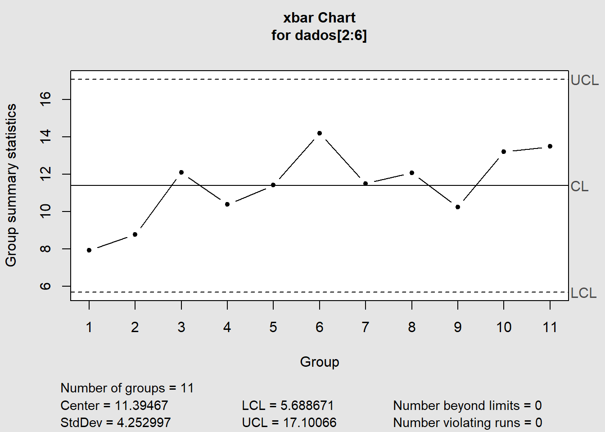

library(tidyverse)
library(timetk)
library(lubridate)
library(plotly)
library(ggQC)
library(qcc)LOGEMP-20-05-2023
Carregando pacotes
Ler o arquivo de dados não tem dificuldade mas atente aos detalhes ao definir o caminho. Neste exemplo jádefinimos os tipos de dados a serem forçados na leitura. Isto poderia ser realizado também depois.
dados <- readxl::read_excel("Exercico-_Caso_entega.xlsx",col_types = c("date","numeric","numeric","numeric","numeric","numeric"))Variáveis de controle
Assim como fizemos na aula de Qualidade em lógistica precisaremos calcular as vaiáveis de controle
(dados <- dados %>% #calculo de x-bar
mutate(xbar=rowMeans(dados[2:6])) %>%
mutate(r=apply(dados[,2:6],1,#Amplitude
function(x) max(x)-min(x))) %>%
mutate(LCC=mean(xbar)) %>%
mutate(LCS=LCC+(mean(r)*0.72)) %>%
mutate(LCI=mean(xbar)-(mean(r)*0.72)) %>%
mutate(LCCR=mean(r)) %>%
mutate(LCSR=LCCR*2.282)%>%
mutate(LCIR=LCCR*0))# A tibble: 11 × 14
Data x1 x2 x3 x4 x5 xbar r LCC LCS
<dttm> <dbl> <dbl> <dbl> <dbl> <dbl> <dbl> <dbl> <dbl> <dbl>
1 2018-01-10 00:00:00 3 14.1 12.2 3.24 6.98 7.92 11.1 11.4 18.5
2 2018-01-11 00:00:00 5.35 6.59 14.0 4.75 13.2 8.77 9.21 11.4 18.5
3 2018-01-12 00:00:00 13.3 14.1 11.4 11.4 10.3 12.1 3.76 11.4 18.5
4 2018-01-13 00:00:00 9.73 12.1 11.7 14.6 3.79 10.4 10.8 11.4 18.5
5 2018-01-14 00:00:00 7.46 8.26 15.5 14.8 11.1 11.4 8.03 11.4 18.5
6 2018-01-15 00:00:00 25.8 13.0 17.2 2.15 12.9 14.2 23.6 11.4 18.5
7 2018-01-16 00:00:00 9.56 11.6 9.14 15.1 12.1 11.5 5.94 11.4 18.5
8 2018-01-17 00:00:00 7.98 11.5 13.9 13.2 13.8 12.1 5.95 11.4 18.5
9 2018-01-18 00:00:00 12.7 5.30 6.27 15.4 11.5 10.2 10.1 11.4 18.5
10 2018-01-19 00:00:00 16.0 6.44 14.7 13.1 15.8 13.2 9.52 11.4 18.5
11 2018-01-20 00:00:00 14.7 13.3 19.0 8.29 12.1 13.5 10.7 11.4 18.5
# ℹ 4 more variables: LCI <dbl>, LCCR <dbl>, LCSR <dbl>, LCIR <dbl>Plotando o gráfico de controle
(control<-ggplot(dados, aes(Data))+
geom_point(aes(y=xbar),colour= "blue")+
geom_hline(yintercept=dados$LCC, linetype="dashed", color = "red")+
geom_hline(yintercept=dados$LCS, linetype="dashed", color = "green")+
geom_hline(yintercept=dados$LCI, linetype="dashed", color = "purple")+
labs(title = "Grafico de controle com ggplot e plotly",y="Contagem")) (gcontrol<-ggplot(dados, aes(Data)) +
geom_line(aes(y=xbar,fill="xbar"),colour="blue") +
geom_line(aes(y=LCC,fill="LCC"),colour="red")+
geom_line(aes(y=LCS,fill="LCS"),colour="green")+
geom_line(aes(y=LCI,fill="LCI"),colour="purple")+
geom_point(aes(y=xbar))+
labs(title = "Grafico de controle com ggplot e plotly",y="Contagem"))Warning in geom_line(aes(y = xbar, fill = "xbar"), colour = "blue"): Ignoring
unknown aesthetics: fillWarning in geom_line(aes(y = LCC, fill = "LCC"), colour = "red"): Ignoring
unknown aesthetics: fillWarning in geom_line(aes(y = LCS, fill = "LCS"), colour = "green"): Ignoring
unknown aesthetics: fillWarning in geom_line(aes(y = LCI, fill = "LCI"), colour = "purple"): Ignoring
unknown aesthetics: fillUsando plotly para criar um grafico interativo
Outro pacote o plotly usa a mesma base do ggplot2 mas permite que os gráficos quando em HTML sejaminterativos.
ggplotly(control)Usando ggqc
Agora faremos utilizando um pacote criado para o controle de qualidade.
ggplot(dados, aes(x=Data,y=xbar))+
geom_point(color="red")+
geom_line(color="green")+
stat_QC(method = "XmR", #método
auto.label=T,#legendas automaticas
label.digits = 2,#quantidade de dígitos das legendas
show.1n2.sigma =T #adiciona as linhas do desvio padrão
)+
scale_x_continuous(expand = expand_scale(mult=.2))+
labs(title = "Gráfico de controle com o pacote ggQC", y="Contagem")Warning: `expand_scale()` was deprecated in ggplot2 3.3.0.
ℹ Please use `expansion()` instead.Grafico de controle usando o pacote qcc Por último faremos esse exercício usando outro pacote, cuja vntagem énão precisar de nada além dos dados, contudo acho o gráfico mais pobre.
qcc(dados[2:6],type = "xbar")
List of 11
$ call : language qcc(data = dados[2:6], type = "xbar")
$ type : chr "xbar"
$ data.name : chr "dados[2:6]"
$ data : num [1:11, 1:5] 3 5.35 13.29 9.73 7.46 ...
..- attr(*, "dimnames")=List of 2
$ statistics: Named num [1:11] 7.92 8.77 12.11 10.38 11.42 ...
..- attr(*, "names")= chr [1:11] "1" "2" "3" "4" ...
$ sizes : int [1:11] 5 5 5 5 5 5 5 5 5 5 ...
$ center : num 11.4
$ std.dev : num 4.25
$ nsigmas : num 3
$ limits : num [1, 1:2] 5.69 17.1
..- attr(*, "dimnames")=List of 2
$ violations:List of 2
- attr(*, "class")= chr "qcc"